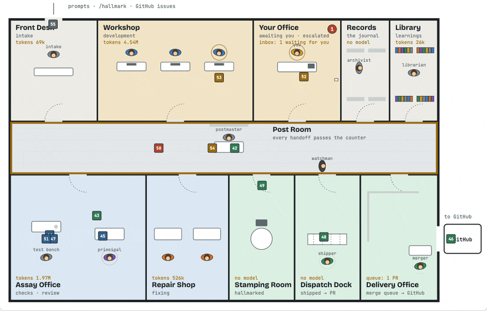
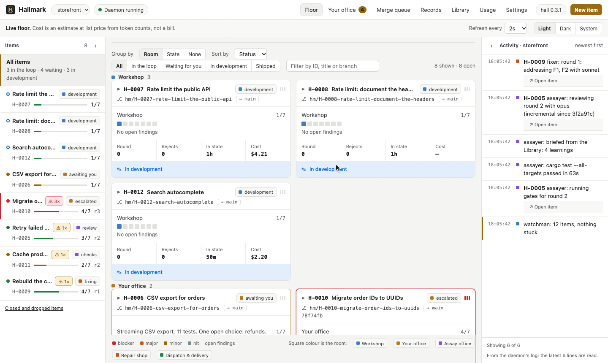

Review that isn't self‑assessment
A separate principal-engineer agent reviews a frozen commit against your base branch, headless, with fresh context. It never edits code, so it has no stake in what it's grading.
Agentic development · automated review · a full record
A local review loop for Claude Code. Agents build your change, an independent principal‑engineer agent reviews the exact commit, a fixer repairs what it finds, and only work that earns a hallmark leaves your machine. You step in only when a decision is truly yours.
$ hall log H-0042H-0042 Retry failed webhook deliveries 10:02 you prompt "retry failed deliveries"10:31 dev commit 7c2d018 retries, 14 tests10:32 you ready round 1, sha frozen10:33 assayer checks ✓ fmt ✓ lint ✓ test10:36 principal verdict changes requested major correctness · retry.rs:48 a 410 is retried forever: the loop has no cap10:41 fixer commit a19be3e cap at 6, stop on 4xx10:42 assayer checks ✓ all gates10:44 principal verdict approved · read the delta10:44 ⚒ hallmark struck on a19be3e10:45 shipper PR #318 opened 2 rounds · 1 finding fixed · 0 interruptions
The problem
A coding agent can produce a change in minutes. Deciding whether that change should ship is still on you, and it has quietly become the slowest, most draining part of the job.
The agent that wrote the code is the one telling you it works. Same context, same blind spots, grading its own homework.
Run the tests, paste the failure back, re-prompt, re-read the whole diff, repeat. The agent waits on you, and you wait on the agent.
Prompts, rejected attempts and decisions vanish with the session. Weeks later, nobody can say why the code looks the way it does.
An agent that keeps trying keeps spending. A red build can burn review tokens, and the bill is a surprise at the end of the month.
More agents don't fix this. They make it worse: every extra agent is another stream of diffs waiting on the same person.
The shift
Hallmark turns "the agent says it's done" into a loop that holds up, so your day stops revolving around someone else's diffs.
How it works
You start work and say when it's ready. Between that moment and a pull request, a script, not an agent, decides when to stop: the loop ends when a hallmark exists or the round limit is reached, never because a model printed "done".
A prompt, a GitHub issue, a branch or an open PR becomes H-0042, with its own branch and worktree.
You and the dev agent iterate in Claude Code. Hooks record every prompt, turn and commit.
The commit is frozen and your tests, lint and build run first. A red build never spends review tokens.
Tests audited first, then seven lenses, with fresh context and your repo's rules. It reports only what it can show is broken.
Addresses findings or disputes them with a reason, and goes back to checks. Re-reviews read only what changed.
Rebased onto the latest base, stamped, and opened as a PR. Conflicts, red CI and new comments come back through the loop, and with the merger on, it waits in the merge queue for its turn and merges without you.

[merge] mode = "auto"), it merges them.
Explore the interactive design →
What changes for you
Agents do the building, the checking and the fixing. You keep the decisions that need judgement, and a record that lets you trust the rest.
A separate principal-engineer agent reviews a frozen commit against your base branch, headless, with fresh context. It never edits code, so it has no stake in what it's grading.
The reviewer audits the tests before anything else. For each changed behaviour it flips the logic like a mutation tool: if no test would fail, approval waits. A bug fix needs its regression test, and the fixer writes the test first.
The approval is a git note on that exact SHA. A push gate in Claude Code blocks anything without one, so "approved" can't drift from what actually ships.
Failing checks and findings go to a fixer and back to review until the commit is approved. Three rejections escalate to you, with the evidence attached. Independent parts of a larger request run as parallel items.
Shipping isn't the end. The Delivery Office watches each PR: a conflict gets rebased, red CI goes to a fixer, and new review comments go back through review. Turn the merger on and green PRs merge in order, each brought up to date once, at its turn. A rebase that keeps the change keeps its hallmark, with no new review.
Questions, escalations and holds land in your office, and reach you in Claude Code's status line, the terminal app, the desktop, or your phone through ntfy, Telegram or Slack. Answer, and the agent's session picks up with its context; pull an item back or retry it with a reason, and the next agent reads it. Only that item waits.
Every model run is measured. Caps per run (with a default for each role), per item, per role and per day stop the loop before it runs away. Checks run before any review tokens are spent, and gates that passed on the same tree don't run again. A busy day? Grant more for today without changing the cap.
Every prompt, commit, check, verdict, fix and decision is appended to a journal. See what was rejected, what was fixed and why, and export any item as Markdown.
When an item closes, the Library keeps what it taught and briefs the principal engineer before the next review. The same mistake gets cheaper to catch.
Add your own skills to extend or replace how the reviewer reviews, how the fixer fixes and what development sessions are told. Like your rules, they're read from the base branch, so a branch can't rewrite its own review.
Gates, worktree and ship commands, and the model for each role, come from .hallmark.toml, with defaults for plain git and gh. Gates can run inside nix develop, devbox, mise or direnv. Change any setting without editing TOML.
No server, no account. Model runs go through your own Claude Code. The journal lives in your git directory and is never committed, because it contains your prompts.
The terminal app
Run hall with no arguments and watch work move live: your office, the board, each item's journal and findings, and what the daemon is doing. Closing it never stops work.
hall watch follows one live.m shows the order PRs merge in and what each one waits for.The web app
Run hall web for every repo's items in one page, on this machine only. Open items on the left, the view in the middle, the daemon's activity on the right, in a light, dark or system theme.
hall command. Usage and budgets, the merge queue, the Library and every setting, and nothing a terminal can't do.
Why "Hallmark"
For more than seven hundred years, English silver has had to be tested before it could be sold. A smith brought each piece to Goldsmiths' Hall in London, where an assayer scraped a sample and tested it. Only a piece that met the standard was struck with the Hall's marks. That is where the word comes from: a hall mark is the mark of the Hall.
The stamp never said the smith was good. It said this piece had passed, and the person who made it was not the one who tested it. That is the trust coding agents are missing, so Hallmark works the same way. It is even laid out like the building: requests arrive at the Front Desk, get built in the Workshop, tested in the Assay Office, repaired in the Repair Shop, stamped, sent from the Dispatch Dock, and, with the merger on, merged from the Delivery Office.
A hallmark on silver is a set of small punches, each answering one question. The note Hallmark strikes on an approved commit answers the same four.
Then: who made the piece.
Now: the item it belongs to, with its journal of every prompt and commit.
"item": "H-0042"
Then: the silver is sterling, at least 92.5% pure.
Now: the gates passed, and no blocker or major finding is open.
"findings": {"blocker":0,"major":0,…}
Then: which hall tested it.
Now: the reviewer that approved it, and in which round.
"reviewer": "opus", "round": 2
Then: the year it was tested.
Now: the moment the hallmark was struck.
"t": "2026-10-12T10:44:07Z"
And it's struck on the piece itself. A hallmark can't be moved to another spoon, and the note lives on one exact commit, a19be3e. Change a byte and you have a new commit with no mark, so it goes back to the Assay Office before it can leave.
Built for agents
Ask for a change as usual, or be explicit with /hallmark <request>. A session hook tells Claude whether it's working in an item, and an edit gate makes sure it is.
next, the commands that make sense now.hall schema prints the JSON Schema of any output.$ hall ready H-0042 { "error": { "code": "ITEM_IN_REVIEW", "message": "H-0042 is in review, round 2.", "next": ["hall pull-back H-0042"] } } exit 4
Get started
You need git and Claude Code. gh is used for issues and pull requests by the default ship command.
hallOne Rust binary for macOS, Linux and Windows. Needs Rust 1.88 or newer.
cargo install --git https://github.com/tiagocolombo/hallmark --locked
Installs the Claude Code plugin, detects your gates, starts the review daemon and runs hall doctor. Safe to run again. Add --interactive to choose gates, models, budgets and notifications as you go.
cd your-repo hall setup
Restart Claude Code and work as usual. Claude opens an item, builds it with you, and sends it to review when you say it's ready. The daemon takes it from there.
claude > retry failed webhook deliveries
Change any setting later with hall config, such as hall config set budget.daily 4M, or ask Claude to "set up Hallmark".
Prefer Nix or a prebuilt binary? See the installation guide for every option, upgrading with hall update, and notes for Windows.
Early and moving fast. Hallmark is at 0.1, and the full loop runs today: items and the journal, gates, checks, test-first review, fixes, shipping, delivery tracking, parallel parts, budgets, notifications, the Library, repo skills and the terminal app. Expect the configuration and CLI to change before 1.0. Every model run goes through claude -p and counts toward your Claude plan or API usage.
Read more
.hallmark.toml key and its default.
DecisionsWhy things are the way they are, one ADR at a time.
ContributingBug reports, docs and code are all welcome.